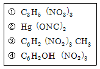
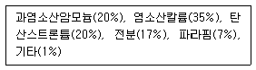
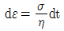
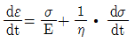
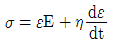
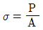
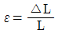
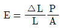
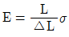
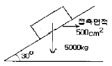

화약류관리기사 (2004-03-07 기출문제)
1과목: 일반화약학
1. 화약류의 선정에 대한 설명으로 옳지 않은 것은?
- 지하수가 많은 갱내에는 함수폭약이 적합하다.
- 겨울에는 난동 또는 부동폭약을 사용한다.
- 여름장마철에는 습기에 약한 질산암모늄 폭약을 사용하지 않는다.
- 갱내에서는 유해가스가 발생하지 않는 칼릿 폭약을 사용한다.
(정답률: 알수없음)

2. 폭발온도를 높이기 위하여 폭약에 혼합 사용하는 재료는?
- 알루미늄 분말
- 중유(重油)
- 과염소산 칼륨
- 질산암모늄
(정답률: 알수없음)
3. 질산암모늄(NH4NO3, 분자량=80)이 분해 시 1그램(g)당산소의 과부족량은?
- + 0.2
- + 0.34
- + 0.392
- + 0.472
(정답률: 알수없음)
4. 도트리쉬 폭속시험법으로 어떤 폭약의 폭속을 측정하였다 기준점에서 폭발합점까지의 거리(x)가 6.2㎝ 일 때 폭약의 폭속은? (단, ℓ = 10㎝, 도폭선의 폭속은 5600㎧ 이다.)
- 4,320㎧
- 4,516㎧
- 4,832㎧
- 5,014㎧
(정답률: 알수없음)
5. 화약의 성능 검사 중 옳지 않게 짝지은 것은?
- 도트리쉬법 - 폭속시험
- 순폭시험 - 뇌관의 강도시험
- 유발시험 - 마찰감도시험
- 안정도시험 - 가열시험
(정답률: 알수없음)
6. 사용상의 안전성이 있는 반면 수질공(水質孔)에 대하여 사용하기 어려운 폭약은?
- 슬러리 폭약
- ANFO 폭약
- 헥소겐
- 젤라틴 다이너마이트
(정답률: 알수없음)
7. 기폭약(Initial explosives) 중 뇌홍(Mercury fulminate)이 폭발할 때 생기는 유독성 가스는?
- 일산화탄소
- 아황산가스
- 암모니아가스
- 황화수소가스
(정답률: 알수없음)
8. 아래 분자식의 물질명을 바르게 나타낸 것은?

- ① 니트로글리세린, ② 질화수은, ③ 펜트리트, ④T.N.T
- ① 니트로글리세린, ② 뇌홍, ③ 테트릴, ④ T.N.B
- ① 니트로글리세린, ② 질화수은, ③ 테트릴, ④ 헥소겐
- ① 니트로글리세린, ② 뇌홍, ③ T.N.T, ④ 피크린산
(정답률: 알수없음)
9. 혼합화약류(Composite Explosives)에 속하지 않는 것은?
- 흑색화약
- 액체산소폭약
- 칼릿(Carlit)
- 피크린산(Picric acid)
(정답률: 알수없음)
10. 헥소겐에 대한 설명으로 옳지 않은 것은?
- 흰색결정으로 냄새가 없으며 열에 대하여 안정하다.
- 학명은 트리에틸렌 트리니트라민이다.
- (CH2)6N4 을 질산으로 니트로화해서 만든다.
- 산업용으로는 전폭약, 공업뇌관의 첨장약, 도폭선의 심약으로 이용된다.
(정답률: 알수없음)
11. 화약류의 보관 방법으로 옳지 않은 것은?
- 피크린산(Picric acid)은 철제 용기에 보관
- 테트릴(Tetryl)은 지류 상자에 보관
- 티엔티(T.N.T.)는 목재 상자에 보관
- N/G(Nitroglycerine)는 동제 용기에 보관
(정답률: 알수없음)
12. 도화선의 폐기방법으로 가장 적절한 것은?
- 산처리 분해
- 연소처리
- 지중에 매몰
- 수중에 방치
(정답률: 70%)
13. 교질다이너마이트(Gelatine Dynamite)의 직접 제조공정이 아닌 것은?
- 배합
- 날화
- 압신
- 황산과 질산분리
(정답률: 알수없음)
14. 흑색화약의 제조 원료가 아닌 것은?
- 목탄
- 황
- 셀룰로오스
- 질산칼륨
(정답률: 알수없음)
15. 다음 중 충격 감도가 가장 예민한 것은?
- DDNP
- 칼릿
- 흑색화약
- 교질 다이너마이트
(정답률: 알수없음)
16. 다음 조성의 신호염관이 연소할 때의 색깔은?

- 녹색
- 청색
- 황색
- 적색
(정답률: 알수없음)
17. 공업용 뇌관에 대한 설명으로 옳지 않은 것은?
- 폭약이 6호 뇌관 한개로 기폭될 수 있는 것을 뇌관기폭성 폭약이라 한다.
- 약간의 흡습성이 있어 방습하지 않으면 폭발강도가 감소하여 불폭되기 쉬워 주의해야 한다.
- 점화방법은 도화선에 의해 첨장약에 점화되어 기폭약이 폭발한다.
- 종류로는 뇌홍, 혼성, 아지화연 뇌관 등이 많이 사용된다.
(정답률: 알수없음)
18. 다음 중 산소공급제가 아닌 것은?
- 질산칼륨
- 니트로벤젠
- 염소산칼륨
- 질산나트륨
(정답률: 알수없음)
19. 니트로 화합물의 일반적인 성질에 대한 설명으로 옳지 않은 것은?
- 흡습성이 높다.
- 물에 잘 녹지 않는다.
- 비교적 열, 충격에 둔감하다.
- 자연분해 경향이 거의 없고 안정하며, 장기 저장이 가능하다.
(정답률: 알수없음)
20. 연주 2개를 포개어 놓고 연주의 변형상태를 관찰하여 맹도를 비교하는 것은?
- 헤스 맹도계
- 캐스트 맹도계
- 브리산스 맹도계
- 연주시험
(정답률: 80%)
2과목: 발파공학
21. 노천에서 계단식 발파를 하고자 한다. 암석층을 덮고 있는 표토층의 체적이 12,000m3, 굴착하고자 하는 암석의 체적은 160,000m3이다. 이때의 strip ratio는?
- 0.075
- 0.016
- 16
- 13.33
(정답률: 알수없음)
22. 발파진동에 의한 구조물의 피해에 상대적으로 가장 영향을 적게주는 요소는?
- 최대진동속도 수준
- 최대진동가속도 수준
- 구조물의 상태
- 고주파진동
(정답률: 알수없음)
23. 심발발파법 중 경사공 천공시 천공장이 1.2m 일 때 기저장약장은 몇 cm이내 이어야 하는가?
- 40cm
- 60cm
- 80cm
- 100cm
(정답률: 알수없음)
24. 발파진동의 특성에 대한 설명으로 가장 거리가 먼 것은?
- 진동의 매질에 따라 발파진동과 공기중을 전파하는 충격파인 폭풍압으로 나눌 수 있다.
- 실험결과에 의하면 발파로 인하여 발생하는 총에너지 중에서 0.5∼20%가 탄성파로 변환되어 발파진동으로 소비된다.
- 발파에 의하여 발생하는 탄성파가 암반중을 전파함으로서 지면에서는 진폭과 주기를 갖는 진동으로 나타난다.
- 지반운동은 일반적으로 변위, 입자속도, 가속도의 3성분과 진폭으로 표시된다.
(정답률: 0%)
25. 다음 중 수공이나 습기가 많은 공의 경우 선택해야 할 폭약중 가장 좋은 것은?
- 다이너마이트
- 정밀폭약
- 초유폭약(ANFO)
- 에멀젼폭약
(정답률: 알수없음)
26. 두 개의 자유면을 가지는 암반이 있다. 평행한 여러 개의 발파공을 간격, 지름, 깊이를 동일하게 하고 지연시차가 동일한 뇌관을 사용하여 발파하는 방법은?
- 지발발파법
- 제발발파법
- 단발발파법
- MS발파법
(정답률: 알수없음)
27. 다음 중 분상장약(Deck charge)에 대한 설명으로 틀린 것은?
- 고비중 폭약을 사용한다.
- 쿠션피스나 스페이서를 사용한다.
- 약포간에 메지를 사용한다.
- 도폭선을 약포에 첨가시켜 약포간에 사이를 둔다.
(정답률: 알수없음)
28. 다음 중 공발의 원인이 될 수 있는 것은?
- 폭약이 노화하였을 때
- 전색이 불충분하였을 때
- 도화선이 불량하였을 때
- 뇌관의 각선이 절단되었을 때
(정답률: 알수없음)
29. 암석발파에 있어 암석계수(Ca)=0.02의 암석을 공경(d)=30mm, 장약장(m)=12d로 발파하고자 할 경우 천공장은?
- 69cm
- 87cm
- 98cm
- 1⑤cm
(정답률: 0%)
30. 다음 조건하에서 발파를 하려고 한다. 장약량을 구하면 얼마인가? (단, 암석계수 0.015, 암석항력계수 1.5, 최소저항선 0.9m, 누두반경 0.9m, 폭약위력계수 1, 전색계수 0.5이다.)
- 0.01 kg
- 0.1 kg
- 0.55 kg
- 0.9 kg
(정답률: 알수없음)
31. 발파에 의한 지반진동속도 (또는 최대입자속도) 예측식의 특성에 관한 설명중 맞는 것은?
- 자승근 환산거리를 사용하는 식은 봉상장약 또는 주상장약(column charge)을 기초로 한 것이다.
- 입지상수 또는 발파진동상수 K 값은 일반적으로 경암으로 갈수록 작아진다.
- 감쇠지수 n은 암반에 불연속면이 많을수록, 공극률이 클수록 그 값은 작아진다.
- 폭원으로부터 근거리에서는 자승근 환산식이 삼승근 환산식보다 보수적(안전한 쪽) 결과를 가져온다.
(정답률: 알수없음)
32. 전기뇌관의 결선에 대한 설명 중 옳지 않은 것은?
- 직렬식 결선은 결선작업이 쉽고 불발시 조사하기 쉽다.
- 직렬식 결선은 한군데 불량한 곳이 있으면 모두 불발된다.
- 병렬식 결선은 결선이 틀리기 쉽고 불발된 뇌관이나 그 위치의 발견이 어렵다.
- 병렬식 결선은 저항이 큰 것이 있으면 먼저 폭발할수 있으므로 저항의 통일이 요구된다.
(정답률: 알수없음)
33. 다음 중 전색물로 사용하기에 가장 적합하지 않은 것은?
- 물
- 점토
- 세사(細砂)
- 탄분
(정답률: 28%)
34. 어느 발파공에 17mm의 폭약을 장전할 때 디커플링 계수(Decoupling Index)가 2가 되게 하기 위해서는 어느 정도의 직경으로 천공을 하여야 하는가?
- 8.5mm
- 17mm
- 18.5mm
- 34mm
(정답률: 알수없음)
35. 다음 발파해체 공법 중 해체대상 구조물의 주요 지지부를 발파하여 생기는 초기거동이 계속적인 붕괴를 유도하고 하부에 쌓인 파쇄물이 충격흡수제의 역할을 하도록 고안된 공법은?
- 내파공법(Implosion)
- 점진붕괴공법(Progressive collapse)
- 상부붕락공법(Toppling)
- 단축붕괴공법(Telescoping)
(정답률: 알수없음)
36. 폭약이 폭발하면 그 폭굉에 따라서 응력파가 발생하고, 이 응력파가 전파되어 자유면에 도달되면 이것이 다시 반사되어 암반속으로 되돌아 간다. 이 때 암석은 압축강도보다 인장강도에 약하므로 입사할 때의 압력파에는 많이 파괴되지 않아도 반사할 때의 인장파에는 많이 파괴된다. 이와 같은 현상을 무엇이라 하는가?
- 샤프만-쥬게효과(Chapman - Jouguet Effect)
- 공극효과(Channel Effect)
- 홉킨슨효과(Hopkinson Effect)
- 스팔링효과(Spalling Effect)
(정답률: 알수없음)
37. 폭속은 화약의 위력을 나타내는 일반적인 인자로서 사용 및 저장조건에 따라 달라진다. 폭속을 지배하는 요인 중 관계가 없는 것은?
- 폭약의 약경 및 용기의 강도
- 폭약의 장전비중, 입도, 밀도
- 폭약의 흡습 및 기폭강도
- 폭약의 천공간격 및 발파시차
(정답률: 20%)
38. 벤치발파시 파쇄입도는 암반이 균일할수록 보다 쉽게 필요로 하는 입도를 얻을 수 있다. 다음 중 큰 파쇄입도를 얻기 위한 방법으로 가장 적당한 것은?
- 상부장약을 증가시킨다.
- 최소저항선을 천공간격보다 아주 작게 한다.
- 지발발파를 실시한다.
- 1회당 1열씩 기폭시킨다.
(정답률: 알수없음)
39. 시험발파에서 최소저항선 2m 일 때, 장약량은 3.2kg로 표준발파가 되었다. 동일조건으로 최소저항선 3m 일 때의 표준장약량은 얼마가 되는가? 또한 이 경우의 누두공의 반경은 발파이론상 얼마인가?
- 10.8kg, 5m
- 6.4kg, 3m
- 10.8kg, 3m
- 21.6kg, 5m
(정답률: 알수없음)
40. 비전기식 뇌관을 사용하여 발파하고자 한다. 다음 설명 중 옳은 것은?
- UBO 콘넥터(Connector)는 최대 10개의 비전기식 뇌관튜브를 연결할 수 있다.
- 비전기식 뇌관 튜브 연결은 향상 점화순서의 주 방향과 반대방향으로 연결해야 한다.
- 1개의 번치 콘넥터(Bunch Connector)당 최대 20개 튜브를 연결할 수 있다.
- 비전기식 뇌관의 튜브는 불로 태우면 폭발하므로 화염에 주의하여야 한다.
(정답률: 20%)
3과목: 암석역학
41. 다음은 암석의 역학적 모형과 그 수식을 나열한 것이다. 서로가 잘못 연결된 것은? (단, σ : 응력, E : 탄성율, ε : 변형율, η : 점성률)
- Hoekean Material σ = ε E
- Newtonean Material

- Maxwell Material

- Voigt Material

(정답률: 알수없음)
42. 어떤 암석의 취성도는 10이고, 압축강도가 120MPa인 경우 인장강도는 얼마인가?
- 12MPa
- 10MPa
- 8MPa
- 6MPa
(정답률: 알수없음)
43. 그리피스(Griffith) 파괴이론에 의하면 암석의 일축압축강도는 일축인장강도의 대략 몇 배인가?
- 같다
- 2배
- 8배
- 10배
(정답률: 알수없음)
44. 암반분류법 중 Q-system에 대한 설명으로 틀린 것은?
- Q 값은 0.001에서 1000 사이의 값으로 대수스케일을 갖는다.
- 암반사면, 기초 등의 설계에 적용이 용이하다.
- 외부 응력조건을 고려한다.
- 불연속면의 변질정도를 고려한다.
(정답률: 19%)
45. 다음 중 순수전단변형률(pure shear starin)상태를 나타내는 것은?
- 1/2(εχ + εy) = 상수＞0
- εχ + εy = 2εχ
- 1/2(εχ - εy) = 상수＞0
- 1/2(εχ + εy) = 0
(정답률: 10%)
46. 신선암의 초음파속도가 4200 m/s, 현장암반의 탄성파속도가 3600 m/s였다. 속도지수에 의한 암반의 분류는?
- 매우우수
- 우수
- 양호
- 불량
(정답률: 0%)
47. 피로파괴에 관한 설명중 틀린 것은?
- 피로파괴란 반복하중후에 발생되는 파괴를 말한다.
- 반복회수가 증가할수록 피로파괴한계강도에 빠르게 도달한다.
- 피로하중에 의해 파괴될 때의 강도를 피로강도라 하며 암석의 경우 최대압축강도의 40 % 수준이다.
- 반복하중이란 하중을 가하다가 제거하는 것을 주기적으로 반복하는 것으로 최대강도의 50% 로 최하 1내지 2주기 이상을 반복하는 것을 의미한다.
(정답률: 9%)
48. 정수압 상태의 응력을 받고 있는 어느 암석의 탄성율이 2.25 × 106 kg/cm2이고 포아송수가 4 이면 이 암석의 체적탄성율은 얼마인가?
- 2.25 × 106 kg/cm2
- 1.50 × 106 kg/cm2
- 1.75 × 106 kg/cm2
- 2.50 × 106 kg/cm2
(정답률: 알수없음)
49. 계측 변위가 구조물의 안전한 거동을 지시하는지를 판단하는 비교기준으로 알맞지 않은 것은?
- 변위속도
- 사용된 지보재의 허용 변위량
- 탄성이론에 따라 예측된 변위량
- 내공변위측선
(정답률: 알수없음)
50. 다음 중 암석의 역학적인 파괴이론의 종류가 아닌 것은?
- Bond의 이론
- Mohr의 이론
- Coulomb의 이론
- Tresca의 이론
(정답률: 알수없음)
51. 암반의 변형특성이 아닌 것은?
- 풍화가 될수록 탄성계수가 저하된다.
- 암석 시험편은 크기가 클수록 강도는 작아진다.
- 공극률이 커질수록 변형계수는 커진다.
- 절리 간격이 작을수록 전단강도는 저하된다.
(정답률: 14%)
52. 록볼트(Rock Bolt)의 가장 이상적인 설치방향은?
- 수직응력에 평행
- 수평응력에 평행
- 균열방향에 수직
- 균열방향에 평행
(정답률: 0%)
53. 암석의 반발 경도 시험에서 암석이 연암일수록 추의 반발은?
- 높이 튄다.
- 낮게 튄다.
- 암석은 경도시험이 불가능하다.
- 추의 반발은 암석의 경, 연에 관계가 없다.
(정답률: 알수없음)
54. 균질한 시료에 삼축압축시험을 실시하여 얻은 결과에 영향을 미치는 요인이 아닌 것은?
- 봉압
- 공극수압
- 온도
- 단축압축강도
(정답률: 알수없음)
55. 이차원 상태의 미소 평면에 σy = 40, σx = 16, τxy =5의 응력(단위 MPa는 생략)이 작용하고 있을 때, 2차원모아 응력원의 중심위치를 (x, y) 좌표로 표현한 것 중 올바른 것은?
- (40, 5)
- (16, 5)
- (34, 0)
- (28, 0)
(정답률: 알수없음)
56. 수평면으로부터 40° 경사진 사면위에 10 ton 중량의 정육면체 암석블록이 놓여있다. 사면을 구성하는 암반에 대해실험한 결과 점착력은 0 t/m2이었으며, 내부마찰각은 30° 이었다. 이 암석블록의 활동에 대한 안전율은?
- 0.388
- 0.488
- 0.588
- 0.688
(정답률: 0%)
57. 길이 L, 단면적 A인 균일 단면봉의 끝단에 압축하중 P를 가하여 Δ L의 길이 변화가 발생하였다. 수직응력(σ), 수직변형률(ε), 영률(E)의 표현이 틀린 것은?




(정답률: 알수없음)
58. 암석시편에 300kg/cm2의 인장응력과 이와 직교하여 200kg/cm2의 전단응력이 작용하고 있다. 이 시편 내부에 발생하는 최대 전단응력은 얼마인가?
- 250kg/cm2
- 300kg/cm2
- 350kg/cm2
- 400kg/cm2
(정답률: 알수없음)
59. 암반의 수평응력이 이론치에 비하여 크게 측정되는 원인과 가장 거리가 먼 것은?
- 지표면의 침식
- 지각운동
- 불연속면
- 암반의 등방성
(정답률: 알수없음)
60. 절리시험편의 전단거동에 대한 설명으로 맞는 것은?
- 절리면이 분리되어 있는 경우 점착력은 0이 된다.
- 절리면의 거칠기가 증가할수록 전단강도는 작아진다.
- 절리면에 작용하는 법선응력이 클수록 전단강도는 감소한다.
- 잔류마찰각은 보통 최대마찰각보다 크다.
(정답률: 0%)
4과목: 화약류 안전관리 관계 법규
61. 화약류를 소지 또는 양수허가를 받지 아니한 사람에게 양도 했을 경우 1회 위반 했다면 행정처분 기준은?
- 1월 효력정지
- 3월 효력정지
- 6월 효력정지
- 1년 효력정지
(정답률: 알수없음)
62. 화약류취급소에 대한 설명 중 잘못된 것은?
- 지붕은 슬레이트, 기와 등 불에 타지 않는 재료를 사용하였다.
- 취급소 문짝 외면은 2mm이상의 철판을 씌우고 2중 자물쇠 장치를 하였다.
- 광업법에 의하여 채광계획인가를 받은 사람이 화약류를 사용할 경우에는 화약류취급소가 필요 없다.
- 취급소내에 난방장치를 하지 않았다.
(정답률: 알수없음)
63. 1급화약류관리보안책임자 1인이 몇 동의 화약류저장소를 관리할 수 있는가? (단, 연중 40톤이상의 폭약을 저장하는 저장소)
- 1개동
- 2개동
- 3개동
- 4개동
(정답률: 알수없음)
64. 화약류저장소에서의 화약류 저장방법으로 옳은 것은?
- 화약류상자는 바닥에서 10㎝이상의 각재 침목 또는 내정전 플라스틱 받침대를 깔고 평행하게 쌓아올린다.
- 아지화연을 주 기폭약으로 사용한 뇌관류와 알루미늄관체의 뇌관류를 함께 쌓아두지 말아야 한다.
- 수중저장소에서는 가루로 된 화약류는 20%정도 물기를 머금게 하고, 방수포장후 나무상자에 저장한다.
- 수중저장소에서는 화약류를 수심 50㎝이상 물속에 저장한다.
(정답률: 알수없음)
65. 화약류 양수허가를 받지 아니하고 양수할 수 있는 경우의 설명 중 맞는 것은?
- 사격용 화약은 1일 200g이하, 수렵용 화약은 1일 400g이하
- 수렵용 실탄 또는 공포탄은 1일 200개이하, 사격용 실탄은 1일 400개이하
- 수렵용 실탄 또는 공포탄은 1일 100개이하, 사격용 실탄은 1일 200개이하
- 광물의 채굴을 하는 사람은 화약 및 폭약 각 2㎏이하
(정답률: 알수없음)
66. 지하에 설치하는 3급저장소의 위치· 구조 및 설비의 기준 중 지하저장소의 윗 지반의 두께가 얼마 이상인 곳에 설치 하여야 하는가?
- 20cm 이상
- 35cm 이상
- 40cm 이상
- 60cm 이상
(정답률: 알수없음)
67. 화약류 저장소에서 일어나는 일들 중 잘못된 것은? (단,수중저장소제외)
- 저장소안에서 휴대용 건전지를 사용하였다.
- 저장소안에서 수불상황을 확인하기 위하여 상자속의 뇌관 숫자를 파악하였다.
- 저장소 내부에 무연화약 또는 다이너마이트를 저장하였을 때 온도계를 비치하였다.
- 저장소의 경계 울타리 안에는 필요없는 사람의 출입을 못하도록 막았다.
(정답률: 9%)
68. 화약류의 유리산 시험에 관한 내용 중 틀린 것은?
- 시험하고자 하는 화약류의 포장지를 제거하고 유리산 시험기에 그 용적의 2/5가 되도록 시료를 넣은 후 청색리트머스시험지를 시료위에 매달고 마개를 봉할 것
- 시료를 밀봉한 후 청색리트머스시험지가 전면 적색으로 변하는 시간을 유리산시험기간으로 하여 이를 측정할 것
- 질산에스텔 및 그 성분이 들어있는 화약에 있어서는 유리산시험시간이 6시간 이상일 것
- 폭약에 있어서는 유리산시험시간이 4시간 이상일 것
(정답률: 알수없음)
69. 초유폭약 발파기술상 기준의 설명으로 잘못된 것은?
- 기폭량에 적합한 전폭약을 같이 사용할 것
- 가연성 가스가 0.5%이상 되는 장소에서는 사용하지말 것
- 금이 가고 틈이 벌어지거나 공동이 있는 곳에 천공된 구멍에는 장약을 하지 말 것
- 장전 후에는 가급적 신속히 점화할 것
(정답률: 알수없음)
70. 1급 저장소에 폭약 25톤을 저장하고자 한다면 보안물건 중 보육기관과의 보안거리는 얼마이상 두어야 하는가?
- 550m
- 520m
- 470m
- 410m
(정답률: 알수없음)
71. 화약류 운반시 운반표지를 하지 않아도 되는 수량으로 틀린 것은?
- 200개이하의 공업용뇌관
- 1만개이하의 총용뇌관
- 1000개이하의 미진동파쇄기
- 100미터이하의 도폭선
(정답률: 알수없음)
72. 화약류의 제조업을 영위하고자 하는 사람은 제조소마다 행정자치부령이 정하는 바에 의하여 누구의 허가를 받아야 하는가?
- 행정자치부장관
- 경찰청장
- 지방경찰청장
- 경찰서장
(정답률: 20%)
73. 동일차량에 함께 실을 수 있는 화약류중 "도폭선"과 함께 실을 수 없는 것은?
- 실탄· 공포탄
- 꽃불류
- 포경용신관
- 로켓트탄· 어뢰
(정답률: 10%)
74. 다음 중 화약류 저장소의 최대저장량에 대한 설명으로 틀린 것은?
- 1급 저장소 : 폭약 50톤
- 2급 저장소 : 폭약 10톤
- 3급 저장소 : 폭약 25㎏
- 수중저장소 : 폭약 200톤
(정답률: 17%)
75. 화약류 사용장소에서 화약류관리보안책임자의 안전상 지시감독에 따르지 아니한 사람에 대한 처벌은?
- 5년 이하의 징역 또는 1천만원이하의 벌금
- 3년 이하의 징역 또는 700만원이하의 벌금
- 2년 이하의 징역 또는 500만원이하의 벌금
- 300만원의 과태료
(정답률: 10%)
76. 다음 중 화약류 관리보안 책임자의 면허를 받을 수 있는 사람은?
- 20세 미만인 사람
- 색맹 또는 색약인 사람
- 손가락이 4개 절단된 사람
- 말은 할 수 있으나 듣지 못하는 사람
(정답률: 알수없음)
77. 화약류 운반신고 의무위반 또는 화약류운반시 적재방법 기술기준위반에 대한 행정처분 기준은? (단, 2회위반)
- 취소
- 6월 효력정지
- 3월효력정지
- 1월 효력정지
(정답률: 알수없음)
78. 화약류 운반신고필증의 반납 사유가 아닌 것은?
- 그 화약류를 운반하지 아니하게 된 때
- 운반기간이 경과한 때
- 운반을 완료한 때
- 운반자가 사망한 때
(정답률: 알수없음)
79. 화약류 저장소가 보안거리 미달로 보안물건을 침범했을 경우 처분기준은?
- 허가취소
- 감량 또는 이전명령
- 6월간 효력정지
- 1년간 허가 취소후 재조치
(정답률: 알수없음)
80. 다음 중 화공품에 속하지 아니한 것은?
- 테트라센등의 기폭제
- 자동차 긴급신호용 불꽃신호기
- 비전기뇌관
- 시동약(始動藥)
(정답률: 알수없음)
5과목: 굴착공학
81. 다음 중 암석의 강도를 측정하는 방법은?
- Schmidt hammer test
- Los Angeles test
- Shore test
- Goodman Jack test
(정답률: 알수없음)
82. 다음 터널공사의 조사 및 계획에 대한 사항을 나타낸 것 중 틀린 사항은?
- 사전조사란 터널의 완공 직전에 실시하는 조사이다.
- 터널노선이 결정되면 주로 보링조사와 상세한 지표답사가 실시된다.
- 조사결과 현재의 설계로 안정성이 확보되기 어려우면 지체없이 변경을 해야 한다.
- 터널의 계획단계에서 NATM공법 적용의 가, 부를 검토해야 한다.
(정답률: 알수없음)
83. 그림과 같이 사면에 절리가 발달하여 있고 절리 위의 블록의 무게가 5,000 kg, 접촉해 있는 절리면의 면적이 500cm2, 절리면의 경사각 30° , 절리의 점착력 1.0 kg/ccm2, 마찰각 30° 일 때 안전률은 얼마인가?

- 5.0
- 2.0
- 1.2
- 0.8
(정답률: 알수없음)
84. 실험실 암석물성 시험중에서 암석의 파괴이후의 변형특성을 조사하기 위해 적당한 시험방법은?
- 압열인장시험
- 일면전단시험
- 삼축압축시험
- 강성압축시험
(정답률: 10%)
85. 숏크리트(shotcrete)공법에는 건식공법과 습식공법이 있다. 다음 사항중 건식공법과 관련있는 것은 어느 것인가?
- 공급작업의 제한이 적다.
- 장거리 압송에 부적절하다.
- 분진이 비교적 적다.
- 리바운드(rebound)양이 비교적 적다.
(정답률: 알수없음)
86. 암반의 초기응력 측정법 중 초기지압의 주응력 작용방향은 연직과 수평방향이며, 연직 주응력의 크기는 피복암반압과 같다고 가정하여 해석하는 방법은 어느 것인가?
- 평판재하 시험법
- 공내재하 시험법
- 수압 파쇄법
- 공벽 변형법
(정답률: 알수없음)
87. 사면의 안정에서 전단응력을 증가 시키는 요인과 거리가 먼 것은?
- 지진, 발파에 의한 진동
- 공극수압의 증가
- 굴착에 의한 흙의 일부 제거
- 균열 내에 작용하는 수압
(정답률: 알수없음)
88. 국내 지하철공사에서 가장 많이 쓰이는 개착공법은? (단, 벽면이 토사층일 경우)
- 흙막이 공법
- 분할식 공법
- 트렌치 공법
- 소굴식 공법
(정답률: 알수없음)
89. 다음 중 이상지압이 발생하는 원인이 아닌 것은?
- 편압
- 본바닥 팽창
- 압성토
- 잠재응력의 해방
(정답률: 알수없음)
90. 지진하중이 작용할 때 지반을 해석하고자 한다. 만약 삼축압축시험 결과를 이용하여 강도정수를 구하고자 한다면 어떤 조건의 실험 결과를 이용하여야 하는가?
- 비압밀 비배수
- 비압밀 배수
- 압밀 비배수
- 압밀 배수
(정답률: 20%)
91. 공내재하시험에 대한 설명 중 틀린 것은?
- 지반의 변형계수, 암반분류지표, 탄성계수 및 항복치를 구하기 위하여 실시된다.
- 시험공의 길이나 방향에 제한을 받기 때문에 기종이나 형식의 선택에 유의해야 한다.
- 공내재하시험은 재하방식에 의해 등분포재하법과 등변위재하법으로 구분된다.
- 재하속도는 1∼10 kg/cm2/min의 범위로 설정한다.
(정답률: 알수없음)
92. 수평과 수직방향의 응력이 각각 0.5t/m2와 2t/m2가 작용하는 암반내에 반경 3m의 원형터널을 굴착하였다. 천반벽면에 작용하는 접선응력의 형태와 크기는?
- 압축, 1.5 t/m2
- 인장, -2.5 t/m2
- 압축, 5.5 t/m2
- 인장, -0.5 t/m2
(정답률: 알수없음)
93. 토공사 암석절취시 건설표준품셈에서 대상 암석을 풍화암, 연암, 보통암, 경암, 극경암으로 분류하는 데 사용되는 기준은 무엇인가?
- 암편 탄성파속도와 암편 내압강도
- 자연상태의 탄성파 속도와 암편 탄성파속도
- 암편 인장강도와 암편 내압강도
- 자연상태의 탄성파 속도, 암편 탄성파속도 및 암편 내압강도
(정답률: 알수없음)
94. 굴착기계의 선정시 고려하지 않아도 될 사항은?
- 지반조건
- 지하수압
- 경제성
- 터널단면의 크기와 형상
(정답률: 알수없음)
95. 어느 흙 시료를 대상으로 체가름시험을 실시한 결과 No. 4체 통과율이 92%, No. 40체 통과율 78%, No. 10체통과율 81%, No. 200체 통과율 65% 이고, 액성한계 및 소성한계가 48%와 32%였다. 통일분류법에 의해 분류하면?
- ML
- MH
- CL
- CH
(정답률: 17%)
96. 지표가 수평이고, 강도정수가 점착력(C)=1.0t/m2, 내부마찰각(ø)=30° 인 정규압밀점토의 정지토압계수(Ko)는?
- 0.33
- 0.45
- 0.50
- 1.0
(정답률: 알수없음)
97. 다음 중 지표 침하의 원인이 아닌 것은?
- 터널굴착에 따른 응력해방
- 터널주변 암반의 느슨함
- 지하수 저하에 따른 압축 또는 압밀
- 팽창성 암반의 노출
(정답률: 0%)
98. 터널시공 중 내공변위량이 예측변위량보다 크게 되었다. 터널 설계에서 수정해야 할 방법이 아닌 것은?
- 변형 여유량의 확대
- 단면의 폐합
- 분할굴착, 굴착공법의 변경
- 지보 부재의 감소
(정답률: 알수없음)
99. 비배수 조건하에서 포화점토의 응력집중계수(n)는?
- 1
- 2
- 3
- 4
(정답률: 알수없음)
100. 다음 중 NATM 공법의 원리에 대한 설명으로 가장 거리가 먼 것은?
- 터널을 근본적으로 지지하는 요소는 록볼트, 숏크리트, 콘크리트 라이닝 등과 같은 지보공이다.
- 암반의 이완 또는 이로인한 변형은 최대한 방지하여야 하며 이를 위해 숏크리트를 타설한다.
- 암반의 변위를 계속적으로 계측하여 그 결과를 복공의 방법이나 시기를 결정하는데 이용한다.
- 인버트를 타설, 폐합 튜브를 형성하도록 하며, 아치보다는 링 구조로 하중이 작용하도록 한다.
(정답률: 0%)